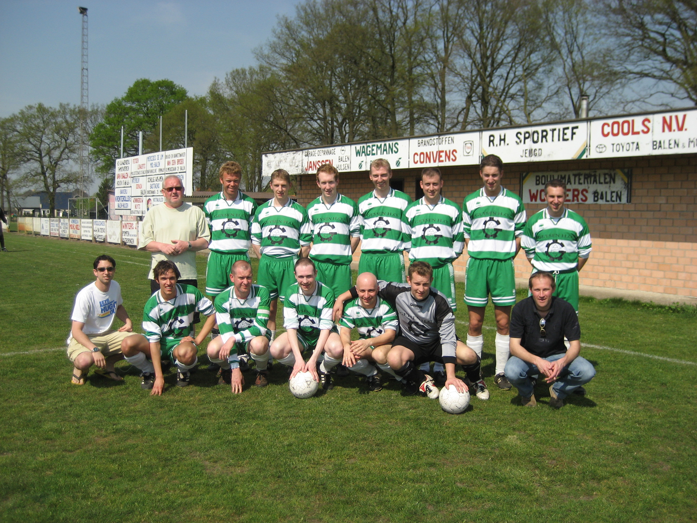
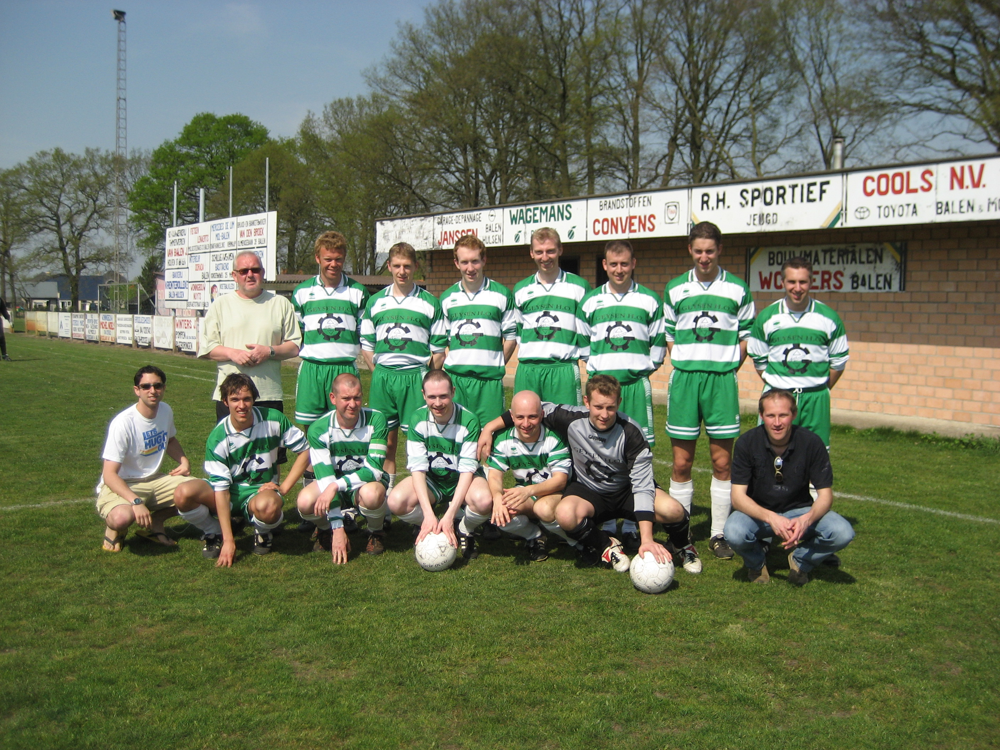

Wat valt er over voetbal te vertellen wat al niet gezegd is geweest? Ik kan elke dag voetbal zien maar niet op tv en zeker niet alleen. Ik hou van voetbal zien in de lagere divisies, de praat rond een veld, de sfeer in de kantine, het plezier van de winaar en de bittere pil voor de verliezer. Bij Voetbal inetegenstelling tot andere sporten kan alles de laatste wint tegen de eerste, ploegen uit een vele lagere reeks winnen tegen 1e klasse ploeg enz. Maar het blijft meer een spel dan een sport daarom dat ik het zo graag doe. Voetbal is een van de weinige sporten die ze niet teveel mogen automatiseren, daarmee wil ik zeggen geen VAR, geen 4, 5 of 6e ref gewoon 1 ref, 2 lijnrechters en gaan met het spelletje. Soms zit het mee soms zit het tegen en dat is waarom ik van het spel houd. Hier onder dan enkele van mijn favoriete voetbal uitspraken.
Elk nadeel heb z'n voordeel. "Johan Cruijff"
Voetbal duurt 90 min en op het einde winnen de Duitsers. "Gary Lineker"
Voetbal is oorlog "Rinus Michels"
 
